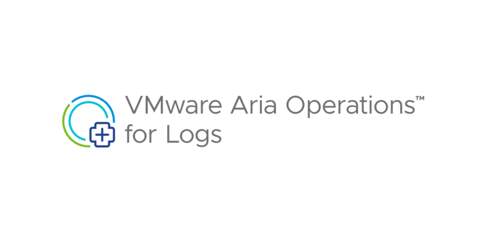
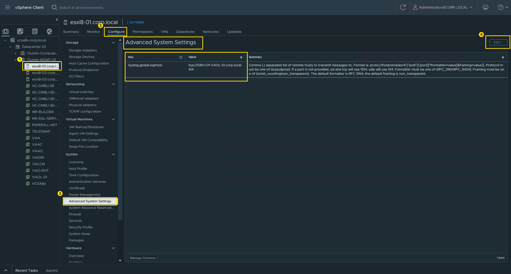
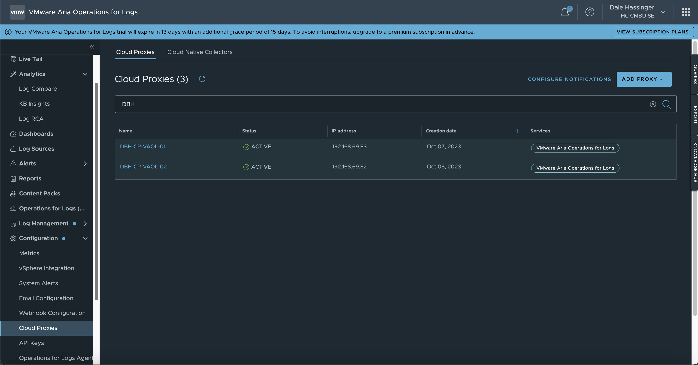
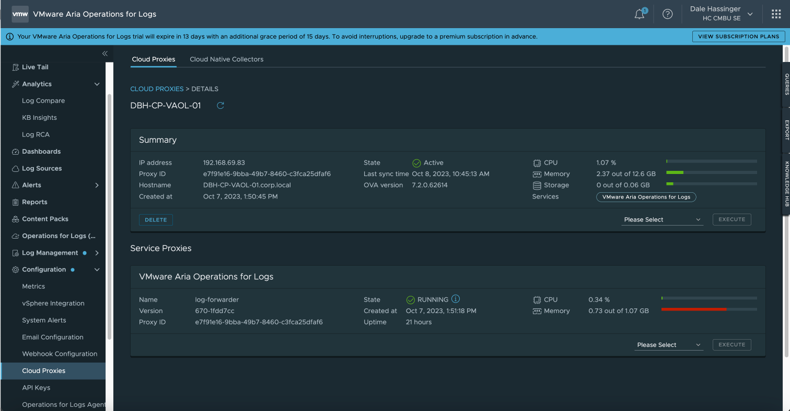
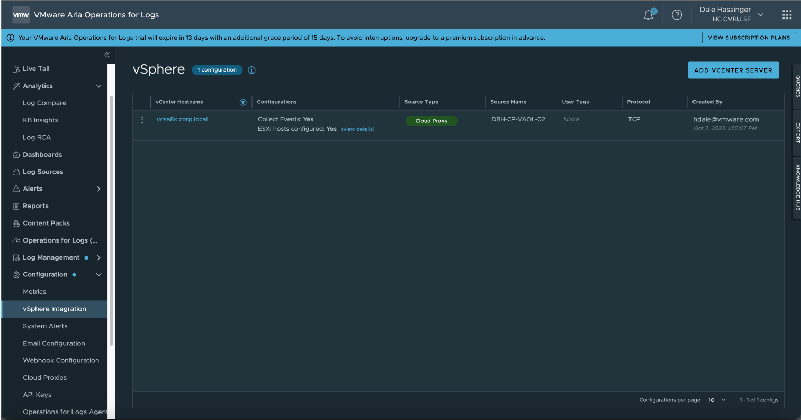
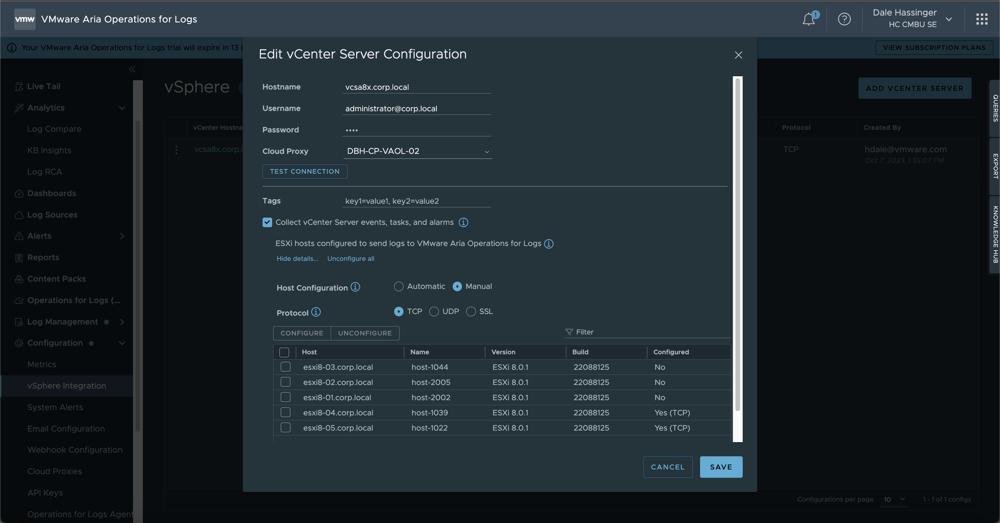
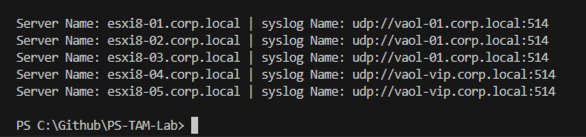

VMware Aria Operations for Logs (SaaS) | ESXi Host syslog setting

How to Automate the ESXi Host "Syslog.global.logHost" setting, when using Cloud Proxies.
This blog post is part of a series of blog posts that will be created to help you "Unlock the Potential" of the VMware Aria Products. I want to give you some "Real World" examples that VMware admins could use everyday to help them with their daily tasks. Hopefully you will learn from my Tips and Tricks.
VMware Aria Operations for Logs | SaaS Version:
The Details in this Blog Post were created in October 2023. New VMware Aria Operations for Logs updates are released every month, so the details shown in this Blog Post could change.
When you use VMware Aria Operations for Logs | SaaS Version, you need to have one or more Cloud Proxies to send the log info from your on-prem vCenter and ESXi Hosts to VMware Cloud Services. If you have more than (1) Cloud Proxy, there is no automated way built into VMware Aria Operations for Logs to distribute the Cloud Proxy usage. One way to set the vCenter ESXi hosts to use a specific Cloud Proxy, is to use a PowerCLI script. I included some sample scripts in this blog post to help you get started.
Logic of the PowerCLI script:
- The script will count the number of VMware Cloud Services, Cloud Proxies Specified
- The script will count the number of VMware vCenter ESXi Hosts in the vCenter Specified
- The script will equally distribute the number of vCenter ESXi Hosts per Cloud Proxy
- The script will set the Advanced System Setting "Syslog.global.logHost" on each ESXi Host
- This is how to manually set the "Syslog.global.logHost" on each ESXi Host
ESXi Host Advanced System Settings:

Cloud Proxies:
- Go to Configuration/Cloud Proxies to see all the Proxies added

Cloud Proxy Information:
- Cloud Proxy Details like State, CPU, Memory

vSphere Integration:
- Go to Configuration/vSphere Integration to see all the vCenters added

vCenter Server Configuration:
- vCenter Server Configuration
- You can use this screen to set which Cloud Proxy to use but if you have 100s or 1000s of Hosts, I find it easier to use the script included in this Blog Post.

PowerShell Code:
Set “Syslog.global.logHost” value on all Hosts
- Sample Script to set the "Syslog.global.logHost" value on each ESXi Host
- The script will balance the usage of the Cloud Proxies
- The script could be scheduled to run every day to maintain the correct settings.
Code:
{{< highlight PowerShell >}}
----- Set Variable Values to use with Script
$vcServer = "vcsa8x.corp.local"
$vcUser = "administrator@corp.local"
$vcPassword = "VMware1!"
----- This example uses (1) syslog setting for each host.
#$syslogServers = "udp://vaol-vip.corp.local:514"
----- This example uses (2) syslog settings for each host.
#$syslogServers = "udp://vaol-vip.corp.local:514,tcp://DBH-CP-VAOL-01.corp.local:514"
----- This example uses (2) syslog settings divided equally between hosts.
#$syslogServers = "udp://vaol-vip.corp.local:514;udp://vaol-01.corp.local:514"
----- This example uses (3) syslog settings divided equally between hosts.
$syslogServers = "udp://vaol-vip-03.corp.local:514;udp://vaol-vip-02.corp.local:514;udp://vaol-vip-01.corp.local:514"
----- This example uses (4) syslog settings divided equally between hosts.
#$syslogServers = "udp://vaol-vip-01.corp.local:514;udp://vaol-vip-02.corp.local:514;udp://vaol-vip-03.corp.local:514;udp://vaol-vip-04.corp.local:514"
----- Get list of syslog server specifed and seperated by semicolons. Semicolons were used in case you would want to specify (2) syslog servers seperated by commas.
$syslogServerList = $syslogServers.Split(";")
$syslogServerList = $syslogServerList | Sort-Object
$output = "syslog Server List: " + $syslogServerList
Write-Output $output
[int]$syslogServerCount = $syslogServerList.Count
$output = "syslog Server Count: " + $syslogServerCount
Write-Output $output
----- Connect to the vCenter Server or ESXi host
Connect-VIServer -Server $vcServer -User $vcUser -Password $vcPassword -Protocol https -Force
if($syslogServerCount -gt 1){
----- Get Number of Hosts
$hostList = Get-VMHost | Select-Object Name | Sort-Object Name
#$hostList
[int]$hostCount = $hostList.Count
----- Total Number of Hosts
$output = "Host Count: " + $hostCount
Write-Output $output
----- Calculate how to divide the hosts
$baseValue = [math]::Floor($hostCount / $syslogServerCount)
$remainder = $hostCount % $syslogServerCount
----- Create an array to hold the results
$syslogProxyNumber = @(1..$syslogServerCount | ForEach-Object { $baseValue })
#$syslogProxyNumber
----- Distribute the remainder among the numbers
for ($i = 0; $i -lt $syslogServerCount; $i++) {
if ($remainder -eq 0) { break }
$syslogProxyNumber[$i]++
$remainder--
}
$output = "Hosts Per Syslog Group: " + $syslogProxyNumber
Write-Output $output
$output = "Highest sysloggroup array value: " + ($syslogProxyNumber.Count - 1)
Write-Output $output
$output = "Syslog Group Count: " + $syslogProxyNumber.Count
Write-Output $output
----- Calculate the sum
[int]$sum = ($syslogProxyNumber | Measure-Object -Sum).Sum
$output = "Total Hosts to add syslog info: " + $sum
Write-Output $output
if($sum -eq $hostCount){
Write-Output "Hosts were divided as equal as posible"
}
else{
Write-Output "Hosts were NOT divided equal. TRY AGAIN!"
}
} # End If
else{
Write-Output "Only 1 syslog Server was specififed!"
} # end else
$syslogProxyNumberArrayValue = 0
$servercountstart = 1
$serverCountTotal = $syslogProxyNumber[$syslogProxyNumberArrayValue]
Loop thru ESXi Hosts
foreach($esxiName in $hostList){
----- Create Server Count Number
$servercountstartstr = '0000' + $servercountstart
$servercountstartstr = $servercountstartstr[-4..-1] -join ''
----- Set the syslog Host value on Each ESXi Host
if($syslogServerCount -gt 1){
$output = "Server Count: " + $servercountstartstr + " | ESXi Server Name: " + $esxiName.Name + " | Proxy Name: " + $syslogServerList[$syslogProxyNumberArrayValue]
Write-Output $output
----- Set the Syslog.global.logHost value
$output = "------------- Get-VMHost " + $esxiName.Name + " | Get-AdvancedSetting -Name 'Syslog.Global.Loghost' | Set-AdvancedSetting -Value " + $syslogServerList[$syslogProxyNumberArrayValue] + " -Confirm:$false"
Write-Output $output
----- The next line will make the changes. Remove the line comment after you test the script and make sure you are getting the results you want to use.
#Get-VMHost $esxiName.Name | Get-AdvancedSetting -Name 'Syslog.Global.Loghost' | Set-AdvancedSetting -Value $syslogServerList[$syslogProxyNumberArrayValue] -Confirm:$false
} # End If
elseif($syslogServerCount -eq 1){
$output = "Server Count: " + $servercountstartstr + " | ESXi Server Name: " + $esxiName.Name + " | Proxy Name: " + $syslogServerList
Write-Output $output
----- The next line will make the changes. Remove the line comment after you test the script and make sure you are getting the results you want to use.
#Get-VMHost $esxiName.Name | Get-AdvancedSetting -Name 'Syslog.Global.Loghost' | Set-AdvancedSetting -Value $syslogServerList -Confirm:$false
} # End Elseif
----- Increment Host Count and switch which Proxy to use based on count
$servercountstart++
if($servercountstart -gt $serverCountTotal -and $syslogServerCount -gt 1){
$servercountstart = 1
$syslogProxyNumberArrayValue++
$serverCountTotal = $syslogProxyNumber[$syslogProxyNumberArrayValue]
} # End If
} # End foreach
----- Disconnect from the vCenter Server or ESXi host
Disconnect-VIServer -Server $vcServer -Confirm:$false
{{< /highlight >}}
Get current “Syslog.global.logHost” value on all Hosts
- Here is a sample script that can be used to show the current "Syslog.global.logHost" values
Code:
{{< highlight PowerShell >}}
----- [ Get current sysloghost value on all Hosts ] -----
----- Set Variable Values to use with Script
$vcServer = "vcsa8x.corp.local"
$vcUser = "administrator@corp.local"
$vcPassword = "VMware1!"
----- File Name to store data
$filePath = "C:\Github\PS-TAM-Lab\syslog-current-info.csv"
----- Connect to the vCenter Server or ESXi host
Connect-VIServer -Server $vcServer -User $vcUser -Password $vcPassword -Protocol https -Force
----- Get list of all Hosts
$hostList = Get-VMHost | Select-Object Name | Sort-Object Name
----- Create new CSV file
New-Item -Path $filePath -ItemType File -Force
----- add header to CSV file
Add-Content -Path $filePath -Value "ServerName,syslogName"
----- Get all ESXi Hosts
$hostList = Get-VMHost | Select-Object Name | Sort-Object Name
----- Output Data to screen and the CSV file
foreach($hostName in $hostList){
$syslogInfo = Get-VMHost -Name $hostName.Name | Get-AdvancedSetting -Name "Syslog.global.logHost"
$output = "Server Name: " + $syslogInfo.Entity.Name + " | syslog Name: " + $syslogInfo.Value
Write-Output $output
----- add info to csv file
$addContentstr = $syslogInfo.Entity.Name + "," + $syslogInfo.Value
Add-Content -Path $filePath -Value $addContentstr
} # End foreach
----- Disconnect from the vCenter Server or ESXi host
Disconnect-VIServer -Server $vcServer -Confirm:$false
{{< /highlight >}}
- Sample Output from script:

Set “Syslog.global.logHost” value to null on all Hosts
- Sample script if you would ever want to set the "Syslog.global.logHost" values to null on all the ESXi Hosts.
Code:
{{< highlight PowerShell >}}
----- [ Set sysloghost value to null on all Hosts ] -----
----- Set Variable Values to use with Script
$vcServer = "vcsa8x.corp.local"
$vcUser = "administrator@corp.local"
$vcPassword = "VMware1!"
----- Connect to the vCenter Server or ESXi host
Connect-VIServer -Server $vcServer -User $vcUser -Password $vcPassword -Protocol https -Force
----- Get list of all Hosts
$hostList = Get-VMHost | Select-Object Name | Sort-Object Name
----- Get all ESXi Hosts
$hostList = Get-VMHost | Select-Object Name | Sort-Object Name
----- Output Data to screen and a CSV file.
foreach($hostName in $hostList){
$output = "Server Name: " + $hostName.Name + " | syslog Name: Set to null"
Write-Output $output
----- Set logserver address to null
Set-VMHostSysLogServer -SysLogServer $null -VMHost $hostName.Name
} # End foreach
----- Disconnect from the vCenter Server or ESXi host
Disconnect-VIServer -Server $vcServer -Confirm:$false
{{< /highlight >}}
Get “Syslog.global.logHost” address on a specific Host
- Very simple script to get the "Syslog.global.logHost" values on a single ESXi host.
Code:
{{< highlight PowerShell >}}
----- Simple Get syslogserver address on a specific Host
Get-VMHostSysLogServer -VMHost 'esxi8-05.corp.local'
{{< /highlight >}}
Lessons Learned
- When you use VMware Aria Operations for Logs | SaaS Version, you may need more than one Cloud Proxy
- If you have more than one Cloud Proxy, you will need a way to balance the usage between the Proxies
- If you have 10s, 100s or 1000s of ESXi Hosts, using a script will be the easiest and quickest way to specify "Syslog.global.logHost” values.
When I write my blogs, I always say there are many ways to accomplish the same task. This article is just one way that you could accomplish this task. I am showing what I felt was a good way to complete the use case but every organization/environment will be different. There is no right or wrong way to complete the tasks in this article.
- If you found this Blog article useful and it helped you, Buy me a coffee to start my day.